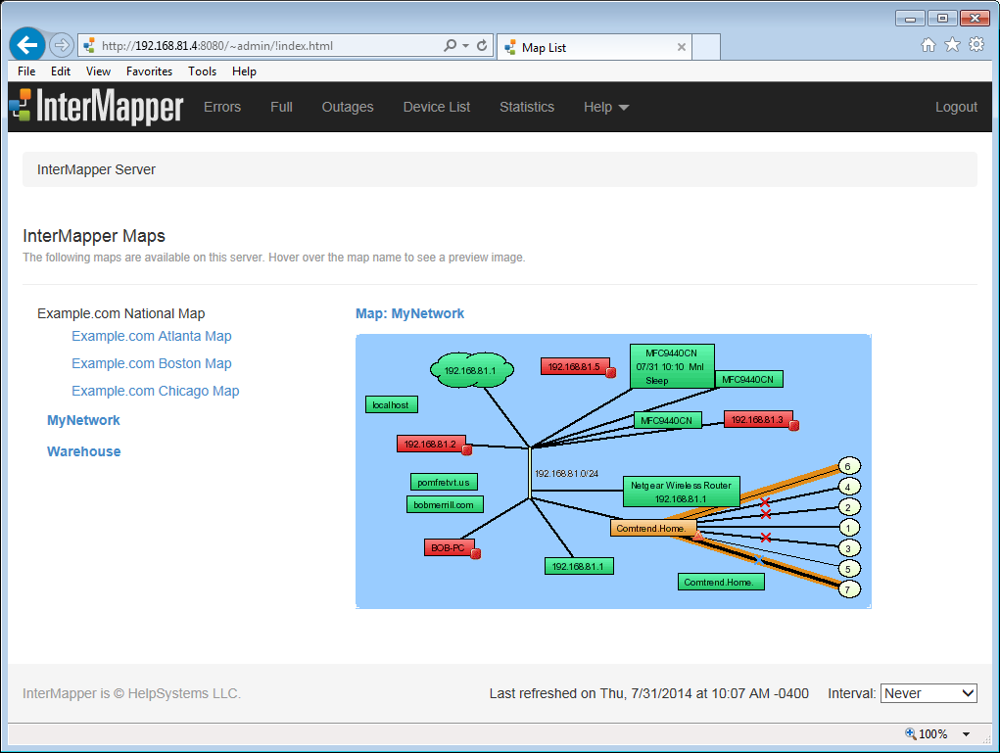
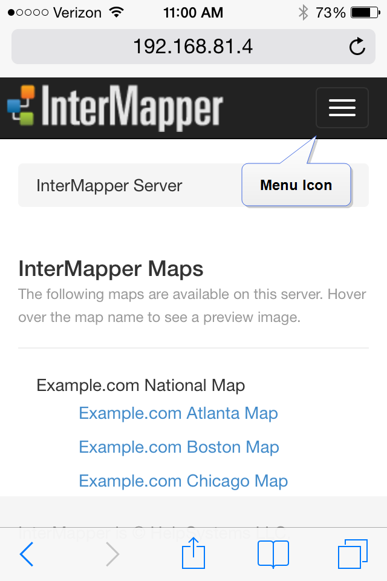
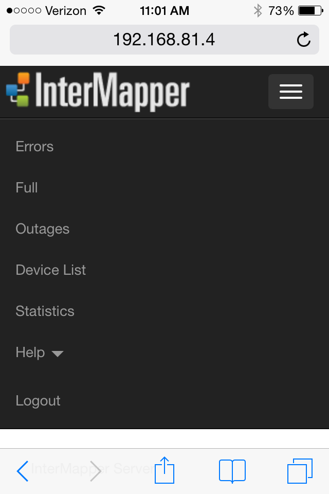

<?xml version="1.0" encoding="utf-8"?>
<html xmlns:MadCap="http://www.madcapsoftware.com/Schemas/MadCap.xsd" MadCap:conditions="Primary.online,Primary.print" MadCap:check_list="Ran Smart Index" MadCap:id="chapter6\web\maps.html" MadCap:timeEstimate="0" MadCap:priority="0" MadCap:status="In Progress" MadCap:lastBlockDepth="5" MadCap:lastHeight="88" MadCap:lastWidth="576" MadCap:fileTags="status_tags.No Changes">
    <head>
        <link rel="StyleSheet" href="../../default.css" /><title>The Map Web Page</title>
    </head>
    <body>
        <h1 class="L2">
            <MadCap:keyword term="Set button" />
            <MadCap:keyword term="Map" />
            <MadCap:keyword term="Map Web Page" />The Home Page</h1>
        <p>
            <MadCap:keyword term="View" />Use the Home page to view a list of open maps and the charts associated with 
 those maps. </p>
        <table border="0" cellspacing="0" cellpadding="5" width="507">
            <tr>
                <td>
                    <p style="text-align: center;">
                        
                    </p>
                    <p><i>The InterMapper Web Server Home page. </i>
                    </p>
                </td>
            </tr>
        </table>
        <ul>
            <li><b>Mouse over a map link</b> to see a preview of a map. </li>
            <li><b>Click the link</b> to view the map.</li>
        </ul>
        <p>Once you are viewing a map:</p>
        <ul>
            <li><b>Click any link, device, or network</b> on a map to view detailed information about that 
 item.</li>
            <li><b>Click a chart link below the map</b> if any charts have been created for this map. See  <![CDATA[      ]]><a href="charts.html">The   Chart Web Page
        <MadCap:xref href="charts.html" target="" title="" alt="" MadCap:conditions="Primary.print" /></a> for more information.
      </li>
            <li>View the map in Google Earth by clicking the link in <b style="font-style: italic;">Links to other pages</b>.</li>
        </ul>
        <p><b>Note: </b>A map on a web page is actually a "snapshot" 
 image of the current state of the map at the time you request the page. The map image is static, so you need to refresh the page to see changes in the map state. You can use the       <b><i><MadCap:keyword term="Reload" />Interval</i></b> dropdown menu button to select the page's refresh interval.</p>
        <h2 class="pagebreakbefore">
            <MadCap:keyword term="Information:Viewing" />Viewing Information for a Link, Device, or Network</h2>
        <p>Click any link, device, or network to view detailed information about that 
 item. This is the same information that appears in a Status window. Here are typical displays:</p>
        <h3><a name="deviceinfo"></a>
            <MadCap:keyword term="Device Status" />Device Status</h3>
        <p>&#160;</p>
        <table border="0">
            <tr>
                <td bgcolor="#FFFF99"><pre><small><span style="color: #108010;"><b>Device Information</b></span><span style="color: #000000;"><br /></span><span style="color: #4040EE;">Name:</span><span style="color: #000000;">    router.company.net.<br /></span><span style="color: #4040EE;"><MadCap:keyword term="DNS:DNS Name" />DNS Name:</span><span style="color: #000000;">router.company.net.<br /></span><span style="color: #4040EE;">Address:</span><span style="color: #000000;"> 192.168.1.1<br /></span><span style="color: #4040EE;">Status:</span><span style="color: #000000;">  UP<br /></span><span style="color: #4040EE;">Protocol:</span><span style="color: #000000;"><MadCap:keyword term="Ping/Echo" />Ping/Echo<br /></span><span style="color: #4040EE;">Up Time:</span><span style="color: #000000;"> n/a<br /></span><span style="color: #4040EE;">Availability:</span><span style="color: #000000;"></span><span style="color: #000000;"><u>100</u></span><span style="color: #000000;">%</span><span style="color: #505050;"><i>(of 1 hour, 29 minutes, 12 seconds)</i></span><span style="color: #000000;"><br /></span><span style="color: #4040EE;"><MadCap:keyword term="Packet Loss" />Packet Loss:</span><span style="color: #000000;"></span><span style="color: #000000;"><u>0.0</u></span><span style="color: #000000;">%</span><span style="color: #505050;"><i>(of 143 total attempts)</i></span><span style="color: #000000;">[</span><span style="color: #000000;"><u>Reset</u></span><span style="color: #000000;">]<br /></span><span style="color: #4040EE;"><MadCap:keyword term="Recent Loss" />Recent Loss:</span><span style="color: #000000;">None<br /></span><span style="color: #505050;"><i>Last updated Jun 23, 12:16:42; interval: 30 seconds</i></span><span style="color: #000000;"><br /></span></small></pre>
                </td>
            </tr>
        </table>
        <p><i><MadCap:keyword term="Typical Device Information" />Typical Device Status.</i>
        </p>
        <h3>
            <MadCap:keyword term="Network Status" />Network Status</h3>
        <table border="0">
            <tr>
                <td bgcolor="#FFFF99"><pre xml:space="preserve"><small><span style="color: #0000FF;"><b>Network Information</b></span><span style="color: #000000;"><br /></span><span style="color: #4040EE;">Name:</span><span style="color: #000000;"> 192.168.1.0/24<br /></span><span style="color: #4040EE;"><MadCap:keyword term="IP" /><MadCap:keyword term="IP Net" />IP Net:</span><span style="color: #000000;">192.168.1.0/24 (255.255.255.0)</span><br /><span style="color: #4040EE;"><MadCap:keyword term="Sum In" />Sum In:</span><span style="color: #000000;"><MadCap:keyword term="Error/min" />   2 pkt/sec 548 byte/sec 0 error/min<br /></span><span style="color: #4040EE;"><MadCap:keyword term="Sum Out" />Sum Out:</span><span style="color: #000000;"> 3 pkt/sec 316 byte/sec 0 error/min<br /><br /></span><span style="color: #108010;"><b>Comment:<br /></b></span><span style="color: #000000;"><MadCap:keyword term="Subnet" />This is the network in the office. 
It has an IP address of 192.168.1.0, and a subnet mask of 
255.255.255.0.</span></small>   <![CDATA[
                    ]]></pre>
                </td>
            </tr>
        </table>
        <p><i><MadCap:keyword term="Typical Network Information" /><MadCap:keyword term="Typical Network" />Typical Network Status.</i>
        </p>
        <h3 class="pagebreakbefore">
            <MadCap:keyword term="Link Status" />Link Status</h3>
        <table border="0">
            <tr>
                <td bgcolor="#FFFF99"><pre><small><span style="color: #108010;"><b><MadCap:keyword term="Interface Information" />Interface Information</b></span><span style="color: #000000;"></span><span style="color: #505050;"><i><MadCap:keyword term="IfIndex" />(ifIndex = 1)</i></span><span style="color: #000000;"><br /></span><span style="color: #4040EE;"><MadCap:keyword term="Device Name" />Device Name:</span><span style="color: #000000;">router.company.net.<br /></span><span style="color: #4040EE;">Description:</span><span style="color: #000000;">EN1<br /></span><span style="color: #4040EE;">Type:</span><span style="color: #000000;">        10 MBit ethernetCsmacd</span><span style="color: #505050;"><i><MadCap:keyword term="MTU" />(MTU=1500)</i></span><span style="color: #000000;"><br /></span><span style="color: #4040EE;">Status:</span><span style="color: #000000;">     UP for 4 days, 13 hours<br /></span><span style="color: #4040EE;">Address:</span><span style="color: #000000;">     192.168.1.1 </span><span style="color: #000000;">(255.255.255.0)</span><span style="color: #000000;"><br /></span><span style="color: #4040EE;"><MadCap:keyword term="MAC Address" />MAC Address:</span><span style="color: #000000;">00-00-C5-76-E2-EC<br /></span><span style="color: #108010;"><b><MadCap:keyword term="Interface Statistics" />Interface Statistics</b></span><span style="color: #000000;"><br /></span><span style="color: #4040EE;">Utilization:</span><span style="color: #000000;"></span><span style="color: #000000;"><u>0.01</u></span><span style="color: #000000;">% </span><span style="color: #505050;"><i>(of</i></span><span style="color: #505050;"><u><i>10 MBit</i></u></span><span style="color: #505050;"><i>  bandwidth)</i></span><span style="color: #000000;"><br /></span><span style="color: #4040EE;"><MadCap:keyword term="Percent Err" />Percent Err:</span><span style="color: #000000;"></span><span style="color: #000000;"><u>0.0</u></span><span style="color: #000000;">% </span><span style="color: #505050;"><i>(</i></span><span style="color: #505050;"><u><i>59</i></u></span><span style="color: #505050;"><i> pkts w/o error)</i></span><span style="color: #000000;"><br /></span><span style="color: #108010;"><MadCap:keyword term="Transmit Statistics" />Transmit Statistics</span><span style="color: #000000;"></span><span style="color: #505050;"><i>(</i></span><span style="color: #505050;"><u><i>0.01</i></u></span><span style="color: #505050;"><i>% utilization)</i></span><span style="color: #000000;"><br /></span><span style="color: #4040EE;"><MadCap:keyword term="Pkt/Second" />Pkt/Second:</span><span style="color: #000000;"></span><span style="color: #000000;"><u>0</u></span><span style="color: #000000;"></span><span style="color: #505050;"><i>(</i></span><span style="color: #505050;"><u><i>5.88</i></u></span><span style="color: #505050;"><i><MadCap:keyword term="Multicast" />% multicast)</i></span><span style="color: #000000;"><br /></span><span style="color: #4040EE;"><MadCap:keyword term="Byte/Second" />Byte/Second:</span><span style="color: #000000;"></span><span style="color: #000000;"><u>73</u></span><span style="color: #000000;"></span><span style="color: #505050;"><i>(</i></span><span style="color: #505050;"><u><i>590</i></u></span><span style="color: #505050;"><i><MadCap:keyword term="Bps" /> bps)</i></span><span style="color: #000000;"><br /></span><span style="color: #4040EE;"><MadCap:keyword term="Err/Minute" />Err/Minute:</span><span style="color: #000000;"></span><span style="color: #000000;"><u>0</u></span><span style="color: #000000;"></span><span style="color: #505050;"><i>(</i></span><span style="color: #505050;"><u><i>0</i></u></span><span style="color: #505050;"><i> errors)</i></span><span style="color: #000000;"><br /></span><span style="color: #4040EE;"><MadCap:keyword term="Disc/Minute" />Disc/Minute:</span><span style="color: #000000;"></span><span style="color: #000000;"><u>0</u></span><span style="color: #000000;"></span><span style="color: #505050;"><i>(</i></span><span style="color: #505050;"><u><i>0</i></u></span><span style="color: #505050;"><i> discards)</i></span><span style="color: #000000;"><br /></span><span style="color: #4040EE;">Percent Err:</span><span style="color: #000000;"></span><span style="color: #000000;"><u>0.0</u></span><span style="color: #000000;">% </span><span style="color: #505050;"><i>(</i></span><span style="color: #505050;"><u><i>17</i></u></span><span style="color: #505050;"><i> pkts w/o error)</i></span><span style="color: #000000;"><br /></span><span style="color: #108010;"><MadCap:keyword term="Receive Statistics" />Receive Statistics</span><span style="color: #000000;"></span><span style="color: #505050;"><i>(</i></span><span style="color: #505050;"><u><i>0.01</i></u></span><span style="color: #505050;"><i>% utilization)</i></span><span style="color: #000000;"><br /></span><span style="color: #4040EE;">Pkt/Second:</span><span style="color: #000000;"></span><span style="color: #000000;"><u>1</u></span><span style="color: #000000;"></span><span style="color: #505050;"><i>(</i></span><span style="color: #505050;"><u><i>59.5</i></u></span><span style="color: #505050;"><i>% multicast)</i></span><span style="color: #000000;"><br /></span><span style="color: #4040EE;">Byte/Second:</span><span style="color: #000000;"></span><span style="color: #000000;"><u>93</u></span><span style="color: #000000;"></span><span style="color: #505050;"><i>(</i></span><span style="color: #505050;"><u><i>748</i></u></span><span style="color: #505050;"><i> bps)</i></span><span style="color: #000000;"><br /></span><span style="color: #4040EE;">Err/Minute:</span><span style="color: #000000;"></span><span style="color: #000000;"><u>0</u></span><span style="color: #000000;"></span><span style="color: #505050;"><i>(</i></span><span style="color: #505050;"><u><i>0</i></u></span><span style="color: #505050;"><i> errors)</i></span><span style="color: #000000;"><br /></span><span style="color: #4040EE;">Disc/Minute:</span><span style="color: #000000;"></span><span style="color: #000000;"><u>0</u></span><span style="color: #000000;"></span><span style="color: #505050;"><i>(</i></span><span style="color: #505050;"><u><i>0</i></u></span><span style="color: #505050;"><i> discards)</i></span><span style="color: #000000;"><br /></span><span style="color: #4040EE;">Percent Err:</span><span style="color: #000000;"></span><span style="color: #000000;"><u>0.0</u></span><span style="color: #000000;">% </span><span style="color: #505050;"><i>(</i></span><span style="color: #505050;"><u><i>42</i></u></span><span style="color: #505050;"><i> pkts w/o error)</i></span><span style="color: #000000;"><br /></span><span style="color: #505050;"><i>Last updated Jun 23, 12:21:02; sample: 37.94 seconds.</i></span><span style="color: #000000;"><br /></span></small></pre>
                </td>
            </tr>
        </table>
        <p><i>Typical Link Status.</i>
        </p>
        <h3>
            <MadCap:keyword term="Map Status" />Map Status</h3>
        <p>
            <MadCap:keyword term="Map Status item" />When you click a Map Status item, the map associated with that device appears, 
 rather than an information window.</p>
        <h3>Using InterMapper Web Server on Mobile Devices</h3>
        <p class="floatright">
            
        </p>
        <p>The InterMapper Web Server supports viewing on mobile devices.</p>
        <p>Tap the menu icon (shown at right) to view the web server menu, shown below.</p>
        <p>
            
            <br /><i>Web Server menu on an iPhone</i>
        </p>
    </body>
</html>